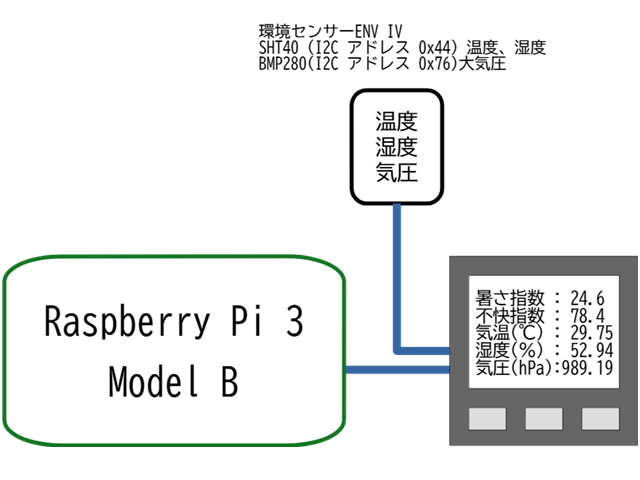
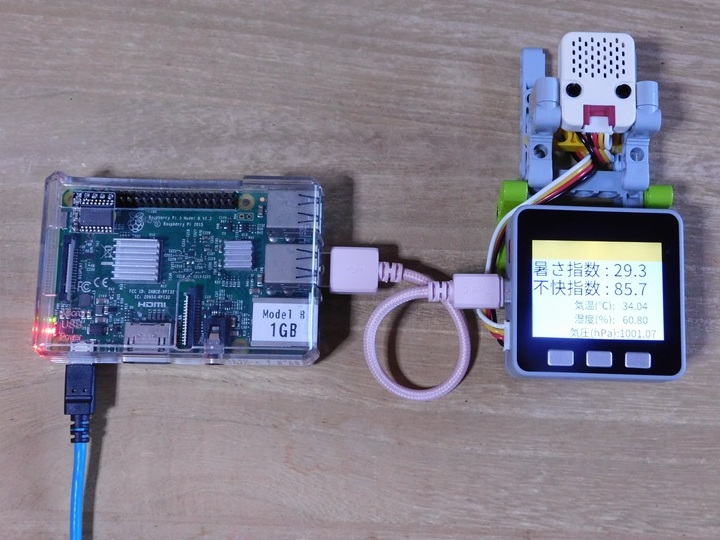

シリアルからの入力を監視し、受け取った文字列の先頭に、受信した日付と時刻を加えて、コンソールへの表示とログファイルへの追記を行う。
以下のように構成されたシステムで、Raspi上でこのプログラムを実行し、計測ユニットから、定期的に送られてくる計測データを記録していくために、go言語で作成した。

システム構成図

システムの外観
$ go build -o serial_logger main.go./serial_logger [options]$ ./serial_logger -baud 115200 -port /dev/ttyUSB0 -file WBGT`date "+%Y%m%d"`.csv上記は、Raspberry Pi上で使用することを想定した起動例である。